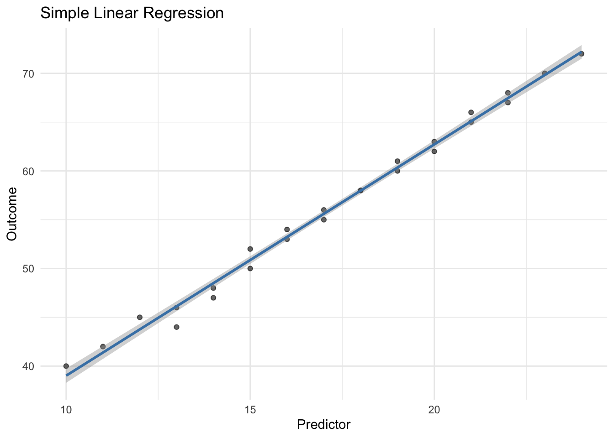
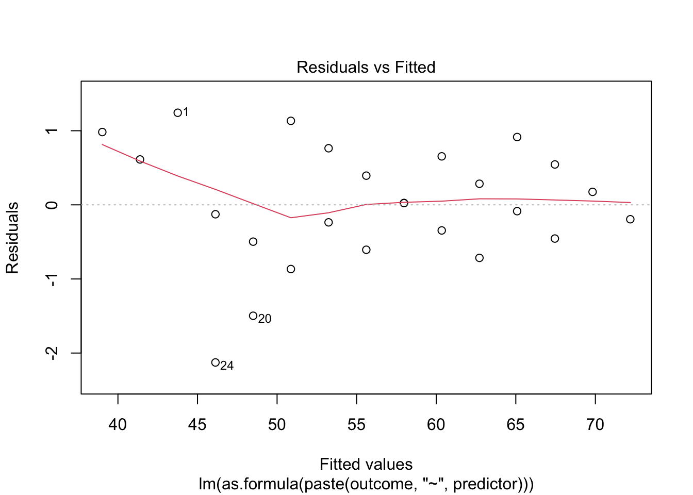
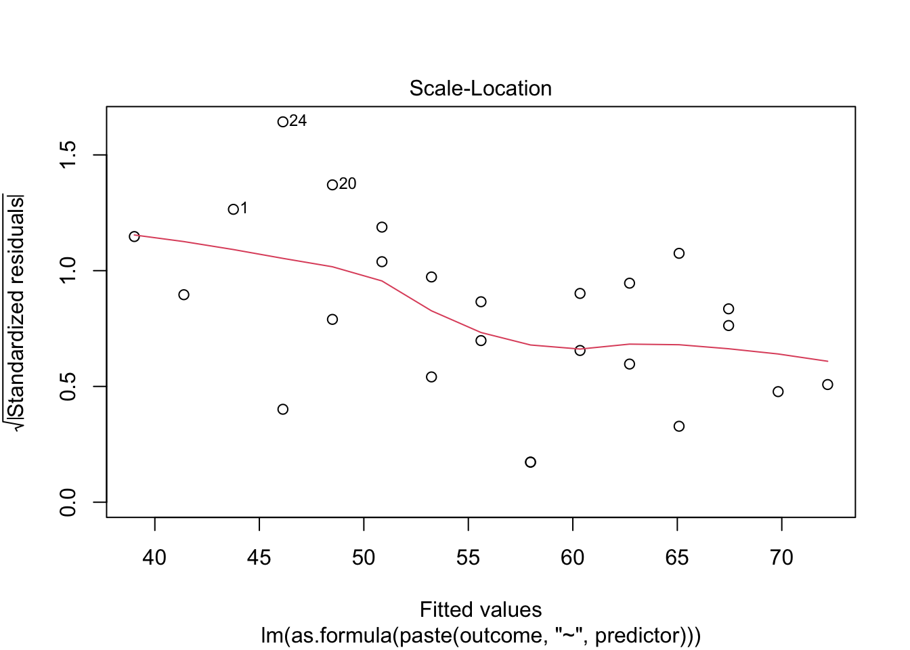
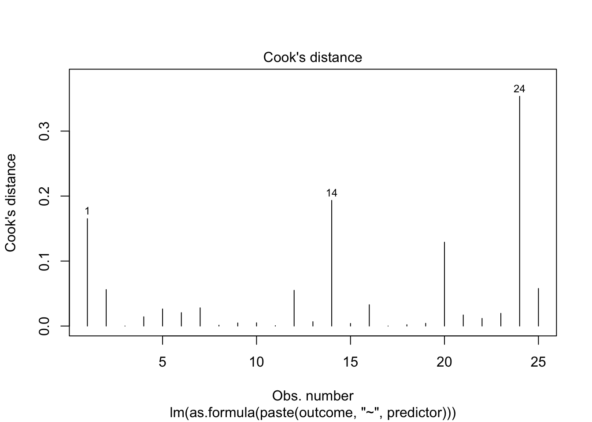

library(tidyverse)
library(effectsize)Boil in the Bag: Simple Linear Regression
One predictor, one outcome
Overview
Use this template when: You want to predict a continuous outcome from a single continuous predictor.
Example scenarios: - Predicting exam score from study hours - Predicting wellbeing from social media use - Predicting anxiety from personality score
Step 1: Setup
Step 2: Load Your Data
# CHANGE THIS: Replace with your data file
data <- read_csv("data/simple_regression_data.csv")
glimpse(data)Rows: 25
Columns: 5
$ id <dbl> 1, 2, 3, 4, 5, 6, 7, 8, 9, 10, 11, 12, 13, 14, 15, 16, 17, 1…
$ age <dbl> 21, 22, 20, 23, 21, 22, 20, 24, 21, 22, 23, 20, 21, 22, 20, …
$ gender <dbl> 1, 2, 1, 2, 1, 2, 1, 2, 1, 2, 1, 2, 1, 2, 1, 1, 2, 1, 2, 1, …
$ predictor <dbl> 12, 15, 18, 14, 20, 16, 22, 13, 19, 17, 21, 11, 24, 10, 23, …
$ outcome <dbl> 45, 52, 58, 48, 62, 54, 68, 46, 60, 56, 65, 42, 72, 40, 70, …Step 3: Define Your Variables
# CHANGE THESE to your variable names
predictor <- "predictor" # Your IV (continuous)
outcome <- "outcome" # Your DV (continuous)Step 4: Descriptive Statistics
data |>
summarise(
# Predictor
pred_mean = mean(.data[[predictor]], na.rm = TRUE),
pred_sd = sd(.data[[predictor]], na.rm = TRUE),
pred_min = min(.data[[predictor]], na.rm = TRUE),
pred_max = max(.data[[predictor]], na.rm = TRUE),
# Outcome
out_mean = mean(.data[[outcome]], na.rm = TRUE),
out_sd = sd(.data[[outcome]], na.rm = TRUE),
out_min = min(.data[[outcome]], na.rm = TRUE),
out_max = max(.data[[outcome]], na.rm = TRUE),
# Correlation
r = cor(.data[[predictor]], .data[[outcome]], use = "complete.obs")
)# A tibble: 1 × 9
pred_mean pred_sd pred_min pred_max out_mean out_sd out_min out_max r
<dbl> <dbl> <dbl> <dbl> <dbl> <dbl> <dbl> <dbl> <dbl>
1 17.2 3.89 10 24 56.1 9.26 40 72 0.996Visualise: Scatterplot
ggplot(data, aes(x = .data[[predictor]], y = .data[[outcome]])) +
geom_point(alpha = 0.6) +
geom_smooth(method = "lm", se = TRUE, color = "steelblue") +
labs(
x = "Predictor",
y = "Outcome",
title = "Simple Linear Regression"
) +
theme_minimal()
Step 5: Run the Regression
model <- lm(as.formula(paste(outcome, "~", predictor)), data = data)
summary(model)
Call:
lm(formula = as.formula(paste(outcome, "~", predictor)), data = data)
Residuals:
Min 1Q Median 3Q Max
-2.12692 -0.45495 0.02418 0.61264 1.24286
Coefficients:
Estimate Std. Error t value Pr(>|t|)
(Intercept) 15.31978 0.76216 20.10 4.34e-16 ***
predictor 2.36978 0.04326 54.78 < 2e-16 ***
---
Signif. codes: 0 '***' 0.001 '**' 0.01 '*' 0.05 '.' 0.1 ' ' 1
Residual standard error: 0.8253 on 23 degrees of freedom
Multiple R-squared: 0.9924, Adjusted R-squared: 0.9921
F-statistic: 3001 on 1 and 23 DF, p-value: < 2.2e-16Step 6: Extract Key Statistics
model_summary <- summary(model)
# Coefficients
intercept <- coef(model)[1]
slope <- coef(model)[2]
# R-squared
r_squared <- model_summary$r.squared
adj_r_squared <- model_summary$adj.r.squared
# F-test
f_stat <- model_summary$fstatistic[1]
df1 <- model_summary$fstatistic[2]
df2 <- model_summary$fstatistic[3]
f_p <- pf(f_stat, df1, df2, lower.tail = FALSE)
# Coefficient test
coef_table <- coef(model_summary)
b <- coef_table[2, 1]
se_b <- coef_table[2, 2]
t_val <- coef_table[2, 3]
t_p <- coef_table[2, 4]
cat("Intercept (b0):", round(intercept, 3), "\n")Intercept (b0): 15.32 cat("Slope (b1):", round(slope, 3), "\n")Slope (b1): 2.37 cat("R²:", round(r_squared, 3), "\n")R²: 0.992 cat("Adjusted R²:", round(adj_r_squared, 3), "\n")Adjusted R²: 0.992 Step 7: Check Assumptions
1. Linearity
plot(model, which = 1)
Look for: Random scatter around zero. Patterns suggest non-linearity.
2. Normality of Residuals
plot(model, which = 2)
# Shapiro-Wilk test
shapiro.test(residuals(model))
Shapiro-Wilk normality test
data: residuals(model)
W = 0.96148, p-value = 0.44463. Homoscedasticity
plot(model, which = 3)
Look for: Horizontal red line, evenly spread points.
4. Influential Cases
plot(model, which = 4)
# Cases with high Cook's D
n <- nrow(data)
influential <- which(cooks.distance(model) > 4/n)
if(length(influential) > 0) {
cat("Potentially influential cases:", influential, "\n")
} else {
cat("No highly influential cases detected\n")
}Potentially influential cases: 1 14 24 Step 8: Confidence Intervals
confint(model) 2.5 % 97.5 %
(Intercept) 13.74313 16.89643
predictor 2.28029 2.45927Step 9: Effect Size
# f² from R²
f_squared <- r_squared / (1 - r_squared)
cat("R² =", round(r_squared, 3), "\n")R² = 0.992 cat("f² =", round(f_squared, 3), "\n")f² = 130.471 cat("\nInterpretation: f² = 0.02 (small), 0.15 (medium), 0.35 (large)\n")
Interpretation: f² = 0.02 (small), 0.15 (medium), 0.35 (large)Step 10: Summary of Results
cat("=== SIMPLE REGRESSION RESULTS ===\n\n")=== SIMPLE REGRESSION RESULTS ===cat("MODEL:\n")MODEL:cat(sprintf(" %s = %.2f + %.2f × %s\n", outcome, intercept, slope, predictor)) outcome = 15.32 + 2.37 × predictorcat("\nMODEL FIT:\n")
MODEL FIT:cat(sprintf(" R² = %.3f (%.1f%% variance explained)\n", r_squared, r_squared * 100)) R² = 0.992 (99.2% variance explained)cat(sprintf(" F(%d, %d) = %.2f, p = %.4f\n", df1, df2, f_stat, f_p)) F(1, 23) = 3000.84, p = 0.0000cat("\nPREDICTOR:\n")
PREDICTOR:cat(sprintf(" %s: b = %.3f, SE = %.3f, t = %.2f, p = %.4f\n",
predictor, b, se_b, t_val, t_p)) predictor: b = 2.370, SE = 0.043, t = 54.78, p = 0.0000cat(sprintf(" 95%% CI: [%.3f, %.3f]\n",
confint(model)[2, 1], confint(model)[2, 2])) 95% CI: [2.280, 2.459]cat("\nEFFECT SIZE:\n")
EFFECT SIZE:cat(sprintf(" f² = %.3f\n", f_squared)) f² = 130.471Step 11: APA Write-Up Template
NoteAPA Format
A simple linear regression was conducted to predict [OUTCOME] from [PREDICTOR]. The model was [significant/non-significant], F(1, XX) = XX.XX, p = .XXX, explaining XX.X% of the variance in [OUTCOME] (R² = .XX).
[PREDICTOR] was a [significant/non-significant] predictor of [OUTCOME], b = X.XX, SE = X.XX, t(XX) = X.XX, p = .XXX, 95% CI [X.XX, X.XX]. For each one-unit increase in [PREDICTOR], [OUTCOME] [increased/decreased] by X.XX units.